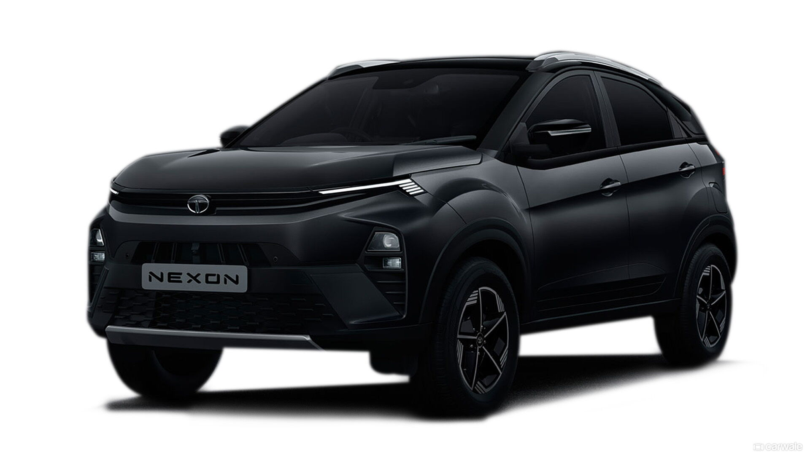
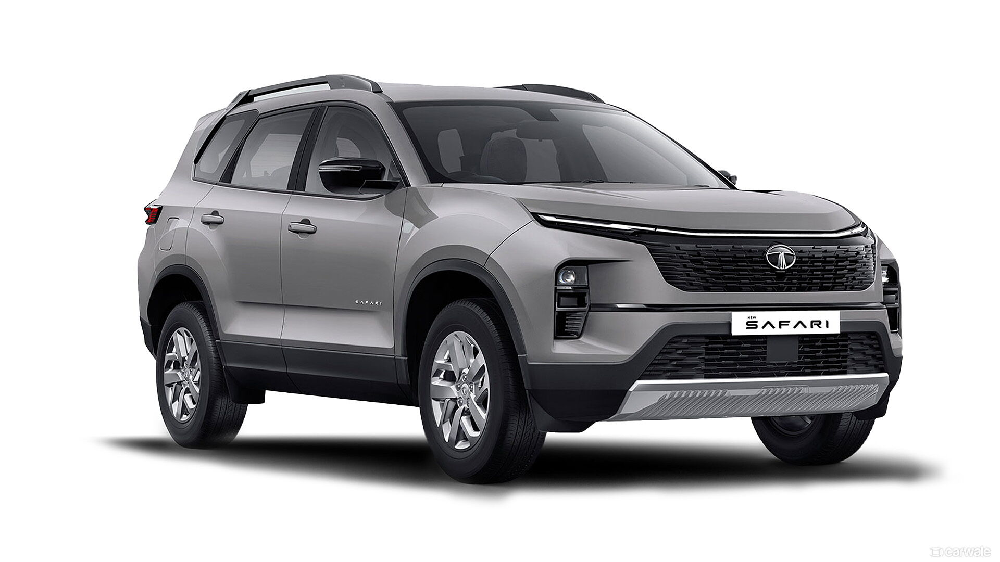

TATA's PRODUCTS

|
Tata Punch
Price : Rs. 6.13 Lakh onward
Mileage : 18.8 to 26.99 kmpl
Engine : 1199 cc
Safety : 5 Star (Global NCAP)
Fuel Type : Petrol & CNG
Transmission: Manual & Automatic
Seat Cpy : 5 Seater
.
|
Tata Nexon
Price : Rs. 8.15 Lakh onwards
Mileage : 17.01 to 24.08 kmpl
Engine : 1199 cc & 1497 cc
Safety : 5 Star (Global NCAP)
Fuel Type : Petrol & CNG
Transmission: Manual & Automatic
Seat Cpy : 5 Seater
|

|
 |
Tata Harrier
Price : Rs. 15.49 Lakh onwards
Mileage : 14.6 to 16.8 kmpl
Engine : 1956 cc
Safety : 5 Star (Global NCAP)
Fuel Type : Diesel
Transmission: Manual & Automatic
Seat Cpy : 5 Seater
|
Tata Safari
Price : Rs. 16.19 Lakh onwards
Mileage : 14.5 to 16.3 kmpl
Engine : 1956 cc
Safety : 5 Star (Global NCAP)
Fuel Type : Diesel
Transmission: Manual & Automatic
Seat Cpy : 6 & 7 Seater
|
 |